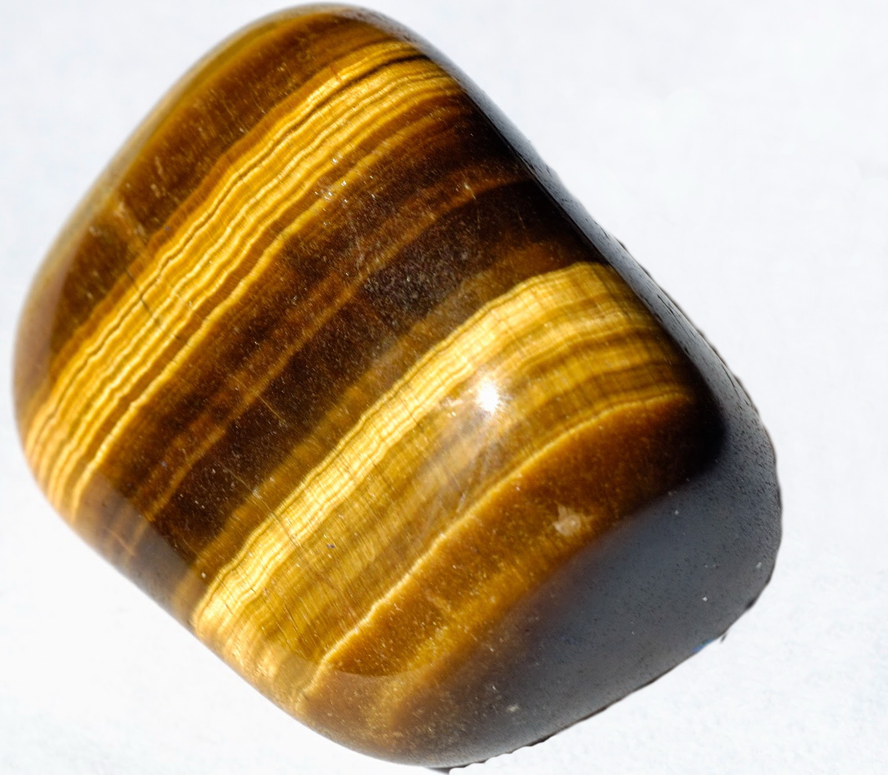
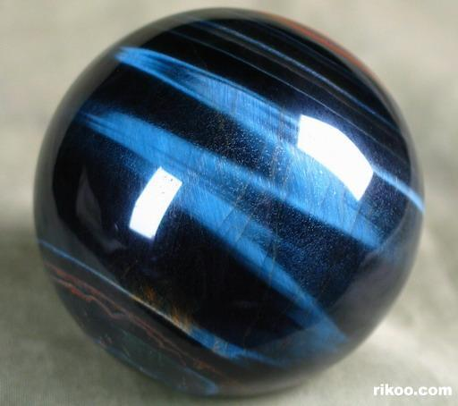
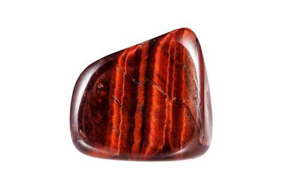
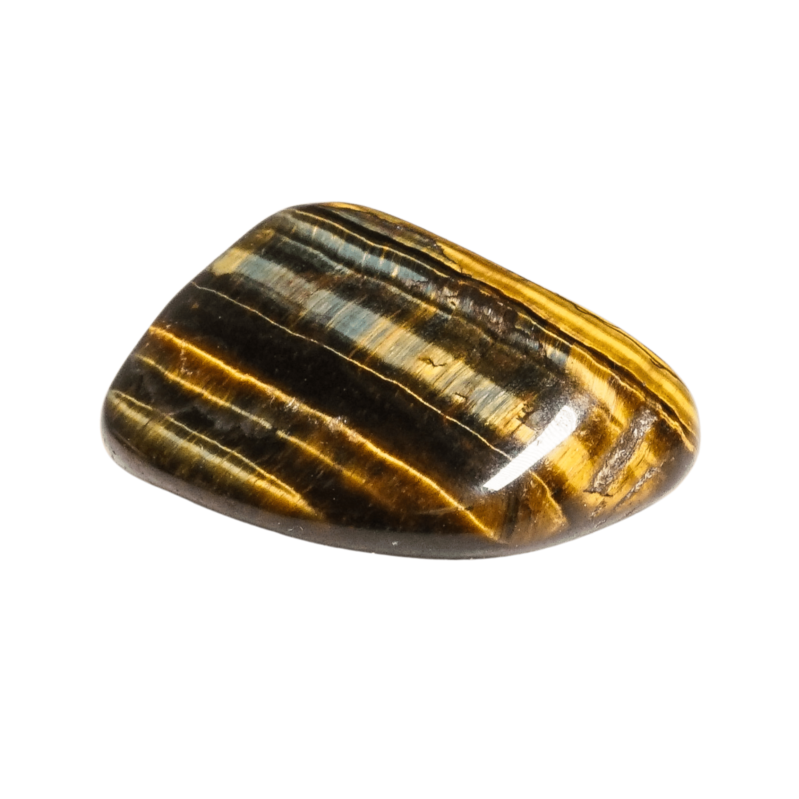
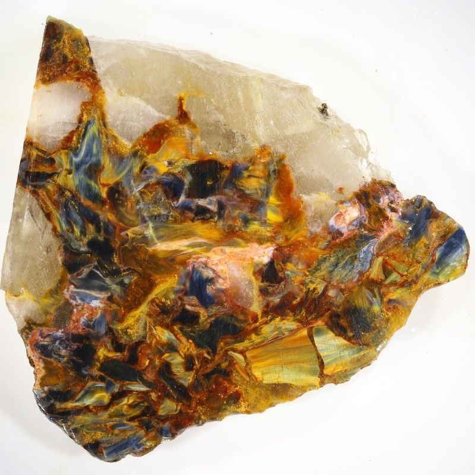

Tiger's Eye: All You Need to Know
In the mesmerizing world of gemstones, Tiger's Eye stands out with its captivating chatoyancy, a mesmerizing optical phenomenon that resembles the slit eye of a watchful tiger. Tiger's Eye is a mesmerizing gemstone cherished for its captivating appearance and rich history. This alluring gem, steeped in history and lore, is not just a feast for the eyes but also a powerhouse of metaphysical properties and practical applications.
So, whether you're a seasoned rockhounder, a curious geologist, or a crystal enthusiast seeking grounding and courage, Tiger's Eye has much to offer. In this article, we will delve into every aspect of Tiger's Eye, providing a detailed guide to uncover the intricacies of this radiant stone.
What is Tiger's Eye?
Tiger's Eye is a variety of quartz distinguished by its golden to red-brown color and silky luster. Its unique appearance is due to the fibrous structure within the stone, which causes a chatoyant effect reminiscent of a tiger's eye. This mesmerizing effect is due to the parallel inclusion of crocidolite fibers within the quartz structure, creating a luminous band of light that seems to move as the stone is rotated. Tiger's Eye belongs to the quartz family and is considered a pseudomorph, meaning it has replaced another mineral, crocidolite, while retaining its fibrous structure.
Appearance and Variations of Tiger's Eye
Tiger's Eye exhibits fascinating chatoyancy, or "cat's eye" effect, where light reflects off the stone in a way that creates a band of light moving across its surface. This effect is primarily seen in polished cabochons and is caused by the parallel intergrowth of quartz crystals and altered amphibole fibers. The stone's colors can range from golden yellow to deep reddish-brown, with variations depending on the iron content and level of oxidation. Other variations include:
- Golden Tiger's Eye:
- Blue Tiger's Eye (Hawk’s Eye): 
- Red Tiger's Eye (Ox’s Eye): 
- Multi-Colored Tiger's Eye: 
- Pietersite: 
The most common variety, featuring yellow and brown stripes. This is the classic form that most people recognize.
A rare variety with a blue or blue-gray hue, resulting from the transformation of crocidolite fibers before the quartz replacement is complete.
Created by heating Golden Tiger's Eye to enhance its reddish-brown tones. This variety is known for its deep, rich hues that resemble the color of an ox’s eye.
Exhibits a combination of golden, red, and blue hues.
A rare and highly prized form of Tiger's Eye with a fractured appearance and a mesmerizing display of colors.
Historical and Cultural Significance
Ancient Uses
Tiger's Eye has been valued for centuries across various cultures. Ancient Egyptians used it in the eyes of deity statues to express divine vision. They also believed it provided protection and strength to its wearer.
Roman soldiers carried it into battle, thinking it bestowed courage and warded off negative energies. In ancient China, it was used as a talisman to ward off the evil eye and was thought to bring good fortune to the wearer.
Beliefs and Associations
Throughout history, Tiger's Eye has been associated with several metaphysical properties, such as grounding, protection, and prosperity. In many cultures, it is believed to balance the yin-yang energies, stabilize mood swings, and imbue the wearer with willpower and self-confidence. Medieval alchemists believed that Tiger's Eye combined the energy of the earth and the sun to create a higher vibrational state that aids in both physical and spiritual healing.
Physical Properties of Tiger's Eye
Chatoyancy Effect
The chatoyancy, or cat's eye effect, is a defining characteristic of Tiger's Eye. This optical phenomenon occurs when light reflects off the parallel fibrous structures within the stone, creating a moving line of light that resembles a tiger's eye. This effect is most pronounced when the stone is cut en cabochon, showcasing its silky luster and vibrant colors.
The Hardness of Tiger's Eye
Tiger's Eye has a hardness of 6.5 to 7 on the Mohs scale. This means it is relatively hard and durable, making it suitable for use in jewelry and other decorative objects. However, its chatoyant surface can be susceptible to scratches if not handled with care.
Formation and Sources of Tiger's Eye
Geological Formation Process
Tiger's Eye forms through a pseudomorphous process, where crocidolite fibers (a type of asbestos) are gradually replaced by quartz. The iron within the crocidolite gives Tiger's Eye its characteristic colors through oxidation. The process retains the fibrous structure, which is responsible for the chatoyant effect. This geological transformation takes millions of years and occurs in metamorphic rocks.
Major Global Sources and Mining Locations
Tiger's Eye is primarily found in South Africa, which is the largest producer of this gemstone. Other significant sources include:
- Australia: Notable for its high-quality Tiger's Eye, often exhibiting vibrant colors and strong chatoyancy.
- India: Produces both golden and blue varieties, often used in intricate jewelry designs.
- Brazil: Known for a range of color variations, including some of the most vibrant golden and red Tiger's Eye.
- Namibia: Supplies high-quality Hawk's Eye and other varieties, often with unique color patterns and intense chatoyancy.
Metaphysical and Healing Properties
Traditional Beliefs and Uses
Tiger's Eye has been regarded as a powerful stone of protection, grounding, and prosperity. It is believed to:
- Enhance courage and strength, making it a favored talisman for warriors and adventurers.
- Provide protection from negative energies and psychic attacks.
- Promote mental clarity and focus, aiding in decision-making and problem-solving.
- Promote emotional balance and harmony, helping to alleviate stress, anxiety, and depression.
- Attract wealth and good fortune, making it a popular stone for businesspeople and entrepreneurs.
Chakra Associations
Tiger's Eye is primarily associated with the Solar Plexus Chakra and the Root Chakra. It is believed to balance these chakras, promoting personal power, stability, and grounding. The Solar Plexus Chakra is linked to self-confidence and personal power, while the Root Chakra is associated with grounding and stability.
Potential Benefits
- Emotional Balance: Helps in stabilizing mood swings and alleviating anxiety, promoting a sense of calm and balance.
- Confidence and Motivation: Boosts self-esteem and encourages action-taking, making it an excellent stone for those needing a confidence boost or motivation to pursue their goals.
- Grounding and Protection: Shields against negative energies and promotes a sense of security, helping to ground the wearer in reality and protect against external negativity.
Combining Tiger's Eye with Other Crystals
Tiger's Eye's energy can be amplified and complemented by pairing it with other crystals. This synergy creates unique combinations that enhance specific intentions and goals. Here are some popular pairings:
- Tiger's Eye and Citrine: This combination is a powerhouse for attracting abundance and prosperity. Citrine's vibrant yellow energy aligns with Tiger's Eye's solar plexus connection, amplifying their shared focus on manifestation and success.
- Tiger's Eye and Carnelian: This pairing ignites creativity and passion. Carnelian's fiery energy stimulates action and motivation, while Tiger's Eye grounds these energies and provides the confidence to pursue one's dreams.
- Tiger's Eye and Clear Quartz: Clear Quartz acts as an amplifier, enhancing the properties of Tiger's Eye. This combination can promote clarity of thought, focus, and intention, making it ideal for meditation and spiritual practices.
- Tiger's Eye and Black Tourmaline: For those seeking protection and grounding, this pairing is a powerful shield against negative energies. Black Tourmaline absorbs negativity, while Tiger's Eye strengthens the aura and promotes inner strength.
- Tiger's Eye and Hematite: For grounding and protection, combining the protective energies of Tiger's Eye with the grounding properties of Hematite.
- Tiger's Eye and Amethyst: This combination balances the energies of action and intuition. Tiger's Eye encourages grounded action, while Amethyst enhances spiritual awareness and inner peace.
Experimenting with different crystal pairings can be a fun and rewarding way to personalize your experience with Tiger's Eye. Trust your intuition and choose combinations that resonate with your specific needs and intentions.
Debunking Misconceptions
While Tiger's Eye is often attributed with numerous metaphysical properties, it's important to distinguish between traditional beliefs and scientific evidence. Some misconceptions include exaggerated claims about its healing abilities or protective powers. While it can be a supportive tool for personal development, it should not replace medical or psychological treatments.
Tiger's Eye does not possess magical powers to instantly grant wealth or success. However, it can serve as a supportive tool for those actively working towards their goals by boosting confidence, motivation, and focus.
Practical Uses and Applications
Jewelry and Gemstones
Tiger's Eye is widely used in jewelry, including rings, necklaces, bracelets, and earrings. Its durability and striking appearance make it a popular choice for both men and women. It is often cut into cabochons to showcase its chatoyancy and polished to a high shine to enhance its natural beauty.
Decorative Objects and Carvings
In addition to jewelry, Tiger's Eye is also used for decorative objects and carvings. Its unique patterns and chatoyancy make it an excellent material for sculptures, figurines, and ornamental pieces. Carvers often use it to create intricate designs that highlight the stone's natural beauty and optical effects.
Feng Shui and Energy Work
In Feng Shui, Tiger's Eye is used to bring balance and protection to a space. Placing it in specific areas of a home or office is believed to promote harmony and positive energy flow. It is often placed in the wealth corner or near entryways to attract prosperity and provide protection.
Choosing and Caring for Tiger's Eye
Identifying Genuine Tiger's Eye
When purchasing Tiger's Eye, look for the following characteristics to ensure authenticity:
- Chatoyancy: Genuine Tiger's Eye will exhibit a distinct cat's eye effect that moves with the light.
- Color: Authentic stones have natural, earthy tones. Be cautious of overly vibrant or unnatural colors, which may indicate dyeing.
- Texture: Real Tiger's Eye should have a smooth, polished surface with visible fibrous structures.
Caring for Tiger's Eye Jewelry and Objects
To maintain the beauty of Tiger's Eye, follow these care tips:
- Cleaning: Clean with a soft cloth and mild soap. Avoid harsh chemicals or ultrasonic cleaners, as they can damage the stone's surface.
- Storage: Store separately from other gemstones to prevent scratching. Keep it in a soft pouch or lined jewelry box.
- Handling: Handle with care to avoid chipping or cracking. Avoid exposing the stone to extreme temperatures or prolonged sunlight, as this can affect its color and durability.
Cutting Tiger's Eye
Cutting Tiger's Eye requires skill to enhance its chatoyancy. Lapidaries often cut it into cabochons, which are rounded, polished stones that best display the cat's eye effect. The orientation of the cut is crucial to achieve the desired chatoyancy, requiring precision and expertise.
Market Value and Purchasing Tips
Factors Affecting the Value of Tiger's Eye
Several factors influence the value of Tiger's Eye:
- Color and Chatoyancy: Stones with vibrant colors and strong chatoyancy are more valuable.
- Size and Quality: Larger, high-quality stones with fewer inclusions fetch higher prices. The clarity and intensity of the chatoyancy also play a significant role in determining the stone's value.
- Cut and Craftsmanship: Well-cut and polished stones that display the chatoyancy effect beautifully are more desirable. The skill and craftsmanship involved in cutting and polishing the stone can greatly affect its overall value.
Tips for Buying Genuine Tiger's Eye
- Reputable Sellers: Purchase from reputable dealers, certified gemologists, and authentic online gem stores like shop.rockhoundin.org. Ensure the seller provides accurate information about the stone's origin and quality.
- Inspection: Examine the stone for natural patterns, chatoyancy, and color consistency. Look for any signs of dyeing or artificial enhancements.
- Certification: Consider obtaining a certificate of authenticity, especially for high-value pieces. This can provide assurance of the stone's quality and origin.
Conclusion
Tiger's Eye is a captivating gemstone with a rich history, striking appearance, and various uses. From its unique chatoyancy to its metaphysical properties, it holds a special place in the world of crystals and gemstones. Whether you're a rockhound, geologist, or crystal enthusiast, understanding the nuances of Tiger's Eye enhances your appreciation of this remarkable stone.
Common FAQs About Tiger's Eye
1. How to Charge Tiger's Eye?
Charging Tiger's Eye is a way to replenish its energy and enhance its metaphysical properties. Here are some common methods to charge your Tiger's Eye stone:
- Sunlight: Place your Tiger's Eye in direct sunlight for a few hours. The sun's energy is believed to recharge the stone. However, avoid prolonged exposure as it can fade the stone's color.
- Moonlight: Leaving the stone under the full moon overnight is a gentle way to charge it. Moonlight is especially effective for stones with calming and balancing energies.
- Earth: Burying Tiger's Eye in the soil for a day or two allows it to reconnect with the earth and absorb natural energies.
- Crystal Clusters: Place your Tiger's Eye on a cluster of clear quartz or amethyst. These crystals are known for their cleansing and amplifying properties.
- Sound: Use a tuning fork, singing bowl, or other sound tools to cleanse and charge the stone with vibrational energy.
2. How Much is Tiger's Eye Worth?
The value of Tiger's Eye can vary depending on several factors:
- Color and Chatoyancy: Stones with vibrant colors and strong chatoyancy are more valuable.
- Size and Quality: Larger, high-quality stones with fewer inclusions fetch higher prices.
- Cut and Craftsmanship: Well-cut and polished stones that display the chatoyancy effect beautifully are more desirable.
Generally, Tiger's Eye can range from a few dollars per carat for lower-quality stones to several hundred dollars for high-quality pieces with exceptional color and chatoyancy.
3. How to Tell if Tiger's Eye is Real?
To identify a genuine Tiger's Eye, look for the following characteristics:
- Chatoyancy: Real Tiger's Eye will exhibit a distinct cat's eye effect that moves with the light.
- Color: Authentic stones have natural, earthy tones. Be cautious of overly vibrant or unnatural colors, which may indicate dyeing.
- Texture: Real Tiger's Eye should have a smooth, polished surface with visible fibrous structures.
- Weight and Density: Genuine Tiger's Eye has a substantial feel due to its quartz content.
- Temperature Test: Natural Tiger's Eye tends to feel cool to the touch.
4. How to Activate Tiger's Eye?
Activating Tiger's Eye involves setting your intentions and connecting with the stone's energy. Here are some steps to activate your Tiger's Eye:
- Cleanse: Cleanse the stone using methods such as smudging with sage, bathing in saltwater, or placing it on a selenite slab.
- Meditate: Hold the stone in your hand during meditation, focusing on your intentions and the stone's properties.
- Affirmations: Speak affirmations related to your goals while holding or wearing the stone.
- Visualization: Visualize the stone's energy merging with your own, amplifying your intentions and desires.
- Carry or Wear: Keep the activated stone close to you, either in your pocket or as jewelry, to maintain its energy.
5. Is Tiger's Eye Safe?
Yes, Tiger's Eye is generally considered safe to handle and use. However, there are some precautions to keep in mind:
- Dust Inhalation: When cutting or polishing Tiger's Eye, use proper safety equipment to avoid inhaling dust, which may contain trace amounts of asbestos fibers.
- Water Exposure: Prolonged exposure to water can damage the stone's surface, so avoid submerging it for extended periods.
- Sunlight Exposure: Prolonged exposure to direct sunlight can fade the stone's color.
6. Can Tiger's Eye Be Placed in the Sun?
Yes, Tiger's Eye can be placed in the sun to charge and cleanse it. However, avoid prolonged exposure to direct sunlight, as it can fade the stone's color over time. A few hours of sunlight should be sufficient to recharge its energy without causing damage.
7. How to Polish Tiger's Eye?
Polishing Tiger's Eye requires careful handling to enhance its natural beauty without damaging the stone. Here's how to do it:
- Clean the Stone: Begin by cleaning the stone with warm, soapy water and a soft brush to remove any dirt or debris.
- Sand the Surface: Use progressively finer grit sandpaper (starting from 600 grit up to 1200 grit) to sand the stone's surface. Wet sanding is recommended to avoid dust.
- Polish with a Cloth: After sanding, use a soft cloth and a polishing compound (such as cerium oxide) to buff the stone. Rub the cloth in circular motions to achieve a high shine.
- Final Buffing: For an extra glossy finish, use a felt polishing wheel or a Dremel tool with a polishing pad.
8. Is Tiger's Eye Toxic?
Tiger's Eye is not toxic when handled properly. However, it contains fibers of asbestos in its natural form, which can be harmful if inhaled during cutting or polishing. To minimize risk:
- Wear a Mask: Use a protective mask to avoid inhaling dust particles.
- Wet Cutting: Wet the stone while cutting or polishing to reduce dust.
- Work in a Ventilated Area: Ensure good ventilation when working with Tiger's Eye to avoid dust accumulation.
By following these precautions, you can safely enjoy the beauty and benefits of Tiger's Eye without health risks.